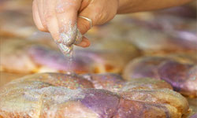

New Orleans King Cake Recipe
Ingredients Required
- 1/2 cup water (110 to 115 degrees)
- 2 packages active dry yeast
- 1/2 cup sugar
- 1 teaspoon sugar
- 3 1/2-4 1/2 cups flour, unsifted
- 1 teaspoon nutmeg
- 2 teaspoons salt
- 1 teaspoon lemon, zest of
- 1/2 cup warm milk
- 5 egg yolks
- 1/2-1 cup butter, cut into slices and softened
- 2 tablespoons softened butter
- 1 tablespoon milk
- 1 egg, slightly beaten with the milk
- 1 teaspoon cinnamon
COLORED SUGARS:
- green food coloring paste
- purple food coloring paste
- yellow food coloring paste
- 12 tablespoons sugar
ICING:
- 3 cups confectioners' sugar
- 1/4 cup lemon juice
- 3 -6 tablespoons water
Step by Step Procedure
- Pour the warm water into a small shallow bowl, and sprinkle yeast and 2 teaspoons sugar into it.
- Allow the yeast and sugar to rest for three minutes then mix thoroughly.
- Set bowl in a warm place, for ten minutes or until yeast bubbles up and mixture almost doubles up in volume.
- Combine 3 1/2 cups of flour, remaining sugar, nutmeg and salt, and sift into a large mixing bowl.
- Stir in lemon zest.
- Separate center of mixture to form a hole and pour in yeast mixture and milk.
- Add egg yolks and using a wooden spoon slowly combine dry ingredients into the yeast/milk mixture.
- When mixture is smooth, beat in 8 tablespoons butter, 1 tablespoon at a time and continue to beat 2 minutes or until dough can be formed into a medium soft ball.
- Place ball of dough on a lightly floured surface and knead like bread.
- During this kneading, add up to 1 cup more of flour (1 tablespoon at a time) sprinkled over the dough.
- When dough is no longer sticky, knead 10 minutes more until shiny and elastic.
- Using a pastry brush, coat the inside of a large bowl evenly with one tablespoon softened butter.
- Place dough ball in the bowl and rotate until the entire surface is buttered.
- Cover bowl with a moderately thick kitchen towel and place in a draft free spot for about 1-½ hours, or until the dough doubles in volume.
- Using a pastry brush, coat a large baking sheet with one tablespoon of butter and set aside.
- Remove dough from bowl and place on lightly floured surface.
- Using you fist, punch dough down with a heavy blow.
- Sprinkle cinnamon over the top, pat and shake dough into a cylinder.
- Twist dough to form a curled cylinder and loop cylinder onto the buttered baking sheet.
- Pinch the ends together to complete the circle.
- Cover dough with towel and set it in draft free spot for 45 minutes until the circle of dough doubles in volume.
- Pre-heat oven to 375 degrees.
- Brush top and sides of cake with egg wash and bake on middle rack of oven for 25 to 35 minutes until golden brown.
- Place cake on wire rack to cool.
- If desired, at this time, you can"hide" the plastic baby in the cake.
- Colored sugars------------------.
- Squeeze a dot of green paste in palm of hand.
- Sprinkle 2 tablespoons sugar over the paste and rub together quickly.
- Place this mixture on wax paper and wash hands to remove color.
- Repeat process for other two colors.
- Place aside.
- Icing------------------.
- Combine sugar, lemon juice and 3 tablespoons water until smooth.
- If icing is too stiff, add more water until spreadable.
- Spread icing over top of cake.
- Immediately sprinkle the colored sugars in individual rows consisting of about two rows of green, purple and yellow.
- Cake is served in 2"- 3" pieces.
|

Nutritional Facts
| Calories: |
462 |
| Total Fat: |
17.3g |
| Sugars: |
-- |
| Total Carbs: |
69.5g |
| Cholesterol: |
128mg |
|